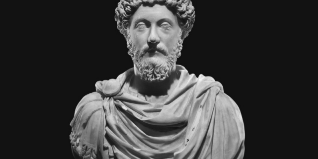

26 April 121 - 17 March 180
was Roman emperor from 161 to 180 and a Stoic philosopher. He was the last of the rulers known\
as the Five Good Emperors (a term coined some 13 centuries later by Niccolò Machiavelli), and the last emperor of the Pax Romana (27 BC to AD 180), an age of relative peace and stability for the Roman Empire.
He served as Roman consul in 140, 145, and 161.
Marcus was born during the reign of Hadrian to the emperor's nephew, the praetor Marcus Annius Verus, and the heiress Domitia Calvilla. His father died when he was three, and his mother and grandfather raised him.
After Hadrian's adoptive son, Aelius Caesar, died in 138,
the emperor adopted Marcus' uncle Antoninus Pius as his new heir. In turn, Antoninus adopted Marcus and Lucius, the son of Aelius. Hadrian died that year and Antoninus became emperor. Now heir to the throne, Marcus studied Greek
and Latin under tutors such as Herodes Atticus and Marcus Cornelius Fronto.
He married Antoninus' daughter Faustina in 145.